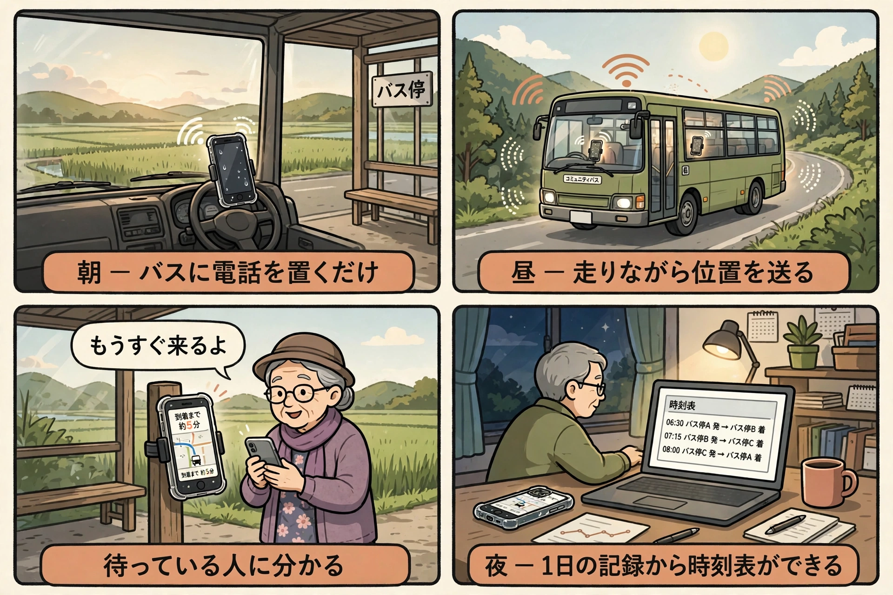
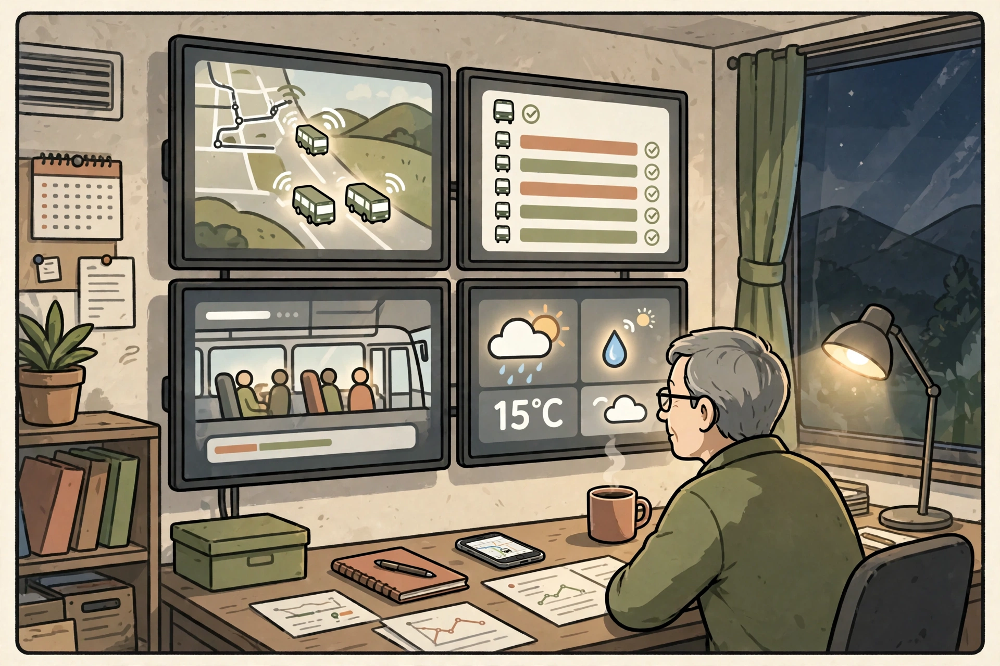

コミュニティバスやスクールバスに、スマートフォンを1台置くだけ。専用の車載機は要りません。バスの位置はサーバーに貯まって、待っている人には「もうすぐ来る」が分かります。

専用システムは高くて入れられなかった路線に。余っている電話が、そのままバスロケになります。
行政が運行するスクールバスに。保護者は「バスが今どこまで来ているか」が分かり、迎えの待ち方が変わります。
実際の到着時刻の記録が残るので、遅れやすい区間や余裕のありすぎる区間が見えます。ダイヤ改正の材料になります。
逆向きの使い方もできます。停留所に小さなビーコンを付けておき、利用者が専用アプリを持って停留所に来ると、その人の電話がビーコンを読み取ってサーバーへ送ります。運行会社やバスの側には「その停留所で待っている人がいる」と伝わります。誰もいない停留所と、待っている人がいる停留所が区別できるので、デマンド交通の配車や、止まる・止まらないの判断に使えます。
位置に加えて、乗り降りの記録も一緒に残せます。置き去りを防ぐ確認の補助として、安い電話で始められます。
「待っている人がいる停留所」がサーバーに集まるので、需要に合わせて車を回す配車の材料になります。
全部のバスの状況、乗っている様子、その日の天気までを、事務所の画面に並べて見る形にできます。

位置を取り続ける部分は、Android の中で Linux の箱を動かす Hako@Linux の GPS ロガーで実証済みです。画面を消したままでも、電池を抑えて記録し続けられます。ネットの無い場所に置きっぱなしにする用途のために作った仕組みが、そのままバスに載ります。